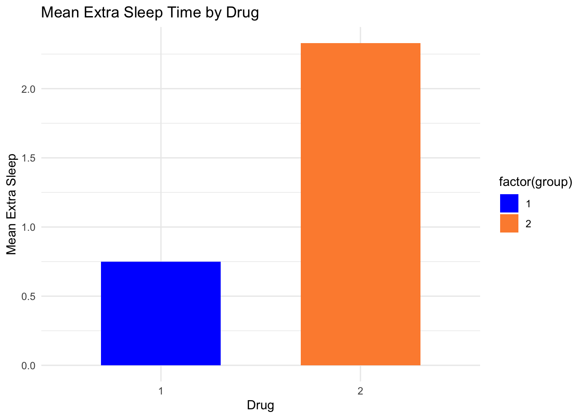

Welcome to my final portfolio piece! I appreciate you checking this out. Even though I aim to be more creative, I am little out of ideas for the last one. After trying multiple different things, I just decided to explore another dataset in R: sleep.
## ── Attaching core tidyverse packages ──────────────────────── tidyverse 2.0.0 ──
## ✔ dplyr 1.1.4 ✔ readr 2.1.5
## ✔ forcats 1.0.0 ✔ stringr 1.5.1
## ✔ ggplot2 3.5.1 ✔ tibble 3.2.1
## ✔ lubridate 1.9.3 ✔ tidyr 1.3.1
## ✔ purrr 1.0.4
## ── Conflicts ────────────────────────────────────────── tidyverse_conflicts() ──
## ✖ dplyr::filter() masks stats::filter()
## ✖ dplyr::lag() masks stats::lag()
## ℹ Use the conflicted package (<http://conflicted.r-lib.org/>) to force all conflicts to become errorsThis data frame has 20 rows and 4 variables. This data shows the effect of two kinds of drugs on sleep on 10 patients. I don’t know how this study is carried out. What concerns me is that each patient was given both drugs and measured their sleep time. I am going to assume that the researchers know what they were doing, and that the two drugs given and measured at different times.
So, my research question is, is the effect of the two drugs different? Is the difference significant?
Let’s do a paired t-test
## # A tibble: 2 × 2
## group mean_extra
## <fct> <dbl>
## 1 1 0.75
## 2 2 2.33drug1 <- sleep$extra[sleep$group == 1]
drug2 <- sleep$extra[sleep$group == 2]
t.test(drug1, drug2, paired = TRUE)##
## Paired t-test
##
## data: drug1 and drug2
## t = -4.0621, df = 9, p-value = 0.002833
## alternative hypothesis: true mean difference is not equal to 0
## 95 percent confidence interval:
## -2.4598858 -0.7001142
## sample estimates:
## mean difference
## -1.58We can see that the mean extra sleep time after using drug 1 is 0.75, and 2.33 for using drug 2. This differences was significant, t(9) = -4.06, p = .003. So, the effect of drug 2 is stronger than drug 1.
Next, I want to use another way to calculate the same thing. First, a different formatting of the data is necessary.
sleep_wide <- sleep %>%
pivot_wider(names_from = group, values_from = extra, names_prefix = "drug")
sleep_wide <- sleep_wide %>%
mutate(diff = drug1 - drug2)Then, let’s run the analysis
##
## Paired t-test
##
## data: sleep_wide$drug2 and sleep_wide$drug1
## t = 4.0621, df = 9, p-value = 0.002833
## alternative hypothesis: true mean difference is not equal to 0
## 95 percent confidence interval:
## 0.7001142 2.4598858
## sample estimates:
## mean difference
## 1.58We got the same result. Finally, let’s plot this t-test.
ggplot(sleep, aes(x = factor(group), y = extra, fill = factor(group))) +
stat_summary(fun = mean, geom = "col", width = 0.6) +
labs(title = "Mean Extra Sleep Time by Drug",
x = "Drug",
y = "Mean Extra Sleep") +
scale_fill_manual(values = c("blue", "#fd8d3c")) +
theme_minimal()